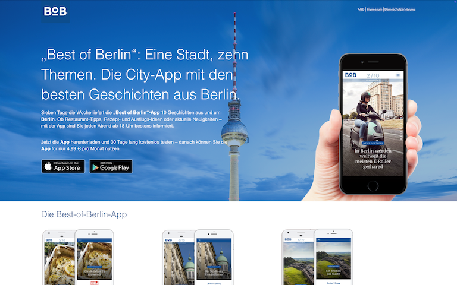
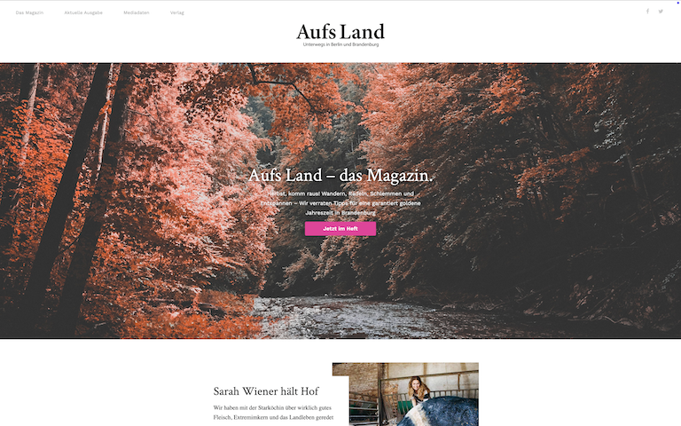
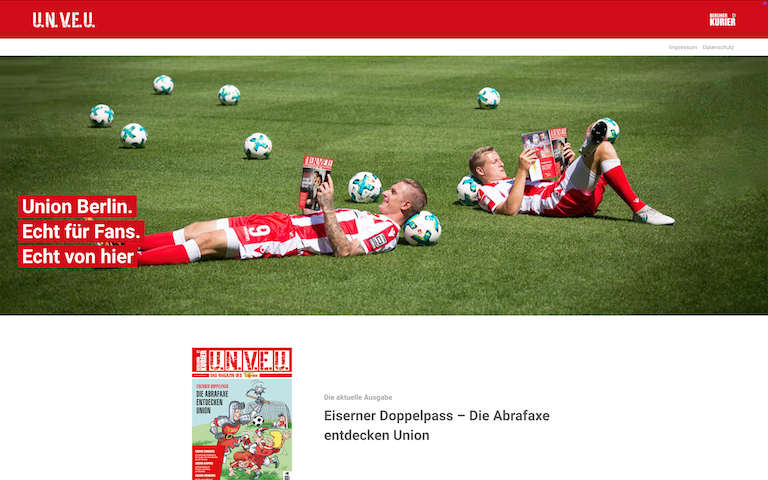
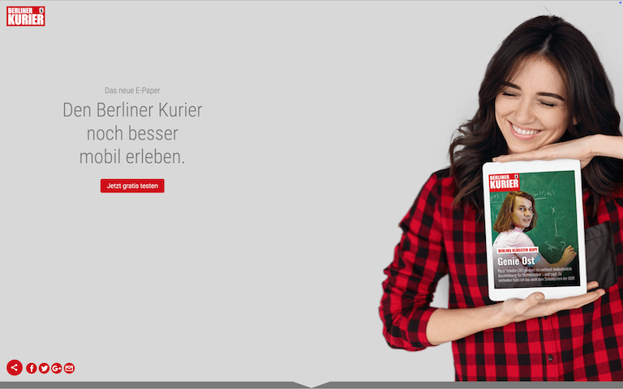
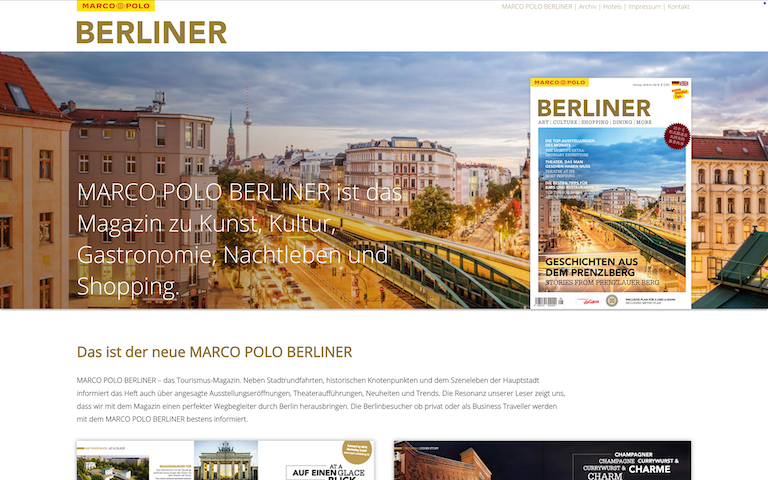
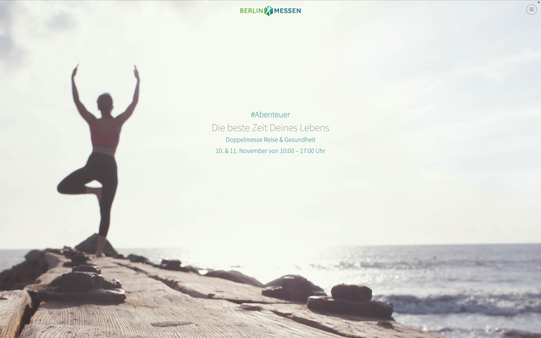

Frontend Entwickler.
Hallo!
Ich bin Stefan, Senior Frontend Entwickler mit mehr als 20 Jahren Erfahrung im Frontend-Bereich.
Mein Fokus liegt dabei auf WordPress, HubSpot-CMS und der Entwicklung von A/B-Tests, mit denen ich datengetriebene Optimierungen vorantreibe.
Ich komme aus Berlin und arbeite zur Zeit bei der mediaworx berlin GmbH als Teil der MAI Group, wo ich meine Leidenschaft für kreatives Coden und modernes Webdesign einbringe.
Kompetenz
Ob es um die Entwicklung flexibler Online-Auftritte, die Umsetzung von Custom Modules oder die Optimierung durch A/B-Tests geht – meine Arbeit konzentriert sich auf sauberen Code und die technische Umsetzung, die messbare Ergebnisse liefert.
Die folgenden Bereiche zeigen die zentralen Aufgabenfelder meiner Arbeit:
WordPress-Entwicklung
- Individuelle Themes & Templates – Entwicklung & Anpassung maßgeschneiderter Designs
- Advanced Custom Fields – Entwicklung individueller Blöcke und flexible Inhaltsverwaltung mit benutzerdefinierten Feldern
- Gutenberg Editor – Erstellung von flexiblen, wiederverwendbaren Blöcken für individuelle Layouts
- Performance-Optimierung – Schnelle Ladezeiten durch Caching & moderne Bildformate
- Wiederverwendbare Elemente – Widgets, Shortcodes & dynamische Komponenten
- Plugins & Erweiterungen – Maßgeschneiderte Funktionen durch gezielte Plugin-Integration
- Versionskontrolle & Deployment – GitHub für Versionskontrolle und GitHub Actions für automatisierte Deployments
HubSpot-CMS-Entwicklung
- Modul- & Template-Entwicklung – Maßgeschneiderte Themes & Komponenten für Websites, Landingpages & Blogs
- HubL & Custom Modules – Erweiterung der Funktionalität durch eigene HubSpot-Module
- Dynamische Inhalte & Automatisierung – Smarte Lösungen mit HubDB & personalisierte Inhalte
- Formular- & API-Integration – Anpassung & Einbindung von HubSpot-Forms & externen Datenquellen
- Performance & SEO-Optimierung – Sauberer Code, schnelle Ladezeiten & strukturierte Daten
- Versionskontrolle & Deployment – GitHub für Versionskontrolle und GitHub Actions für automatisierte Deployments
A/B-Testing & Conversion-Rate Optimierung
- Testvarianten-Entwicklung – Erstellung von Varianten mit HTML, CSS und JavaScript
- Tracking & Analyse – Event-Listener, Cookies und Local Storage für präzise Messungen
- Testing-Tools Integration – Anbindung von A/B-Testing-Tools und APIs für Varianten-Auslieferung
- Optimierung der Nutzererfahrung – Datengetriebene Anpassungen zur Steigerung der Conversion-Rate
- Performance – Optimierung der Ladezeiten und stabile Varianten-Auslieferung
Know-how
Webentwicklung bedeutet für mich, strukturierten Code mit einer intuitiven Nutzerführung zu vereinen. Ich beherrsche ein breites Spektrum – von HTML und CSS bis hin zu interaktiven Webanwendungen – und fokussiere mich auf moderne Frontend-Technologien sowie eine optimierte User Experience.
Erfahrung
Im Laufe meiner beruflichen Reise habe ich wertvolle Erfahrungen gesammelt, neue Herausforderungen gemeistert und mich stetig weiterentwickelt. Jede Station hat nicht nur meine Fähigkeiten erweitert, sondern auch meine Perspektiven geprägt und meinen Werdegang geformt.
-
2019 - Heute
Senior Frontend Entwickler / MAI mediaworx berlin
+Als Senior WordPress- und HubSpot-Entwickler bei MAI Mediaworx Berlin setze ich Websites, Blogs und Landingpages um, optimiere deren Performance und arbeite an der Conversion Rate Optimization (CRO). Ich sorge für die kontinuierliche Weiterentwicklung und Sicherheit der Plattformen in enger Zusammenarbeit mit Kunden, internen Teams und externen Partnern.
Herausforderung:
Für einen Finanzdienstleister wurde eine responsive und benutzerfreundliche Website benötigt, die die einfache Verwaltung von Inhalten ermöglicht und die Professionalität des Unternehmens widerspiegelt. Die Zusammenarbeit mit einer externen Agentur und einem Visual-Design Freelancer war erforderlich, um Design und Technik optimal zu vereinen.
Lösung & Ergebnisse:
- Benutzerfreundliche und professionelle Website
- Flexibles Content-Management mit ACF
- Responsives Design für alle Geräte
- Verbesserte Usability und Nutzerbindung
Technologien:
PHP, WordPress, ACF, Responsive Design
Herausforderung:
Der Agenturblog benötigte regelmäßige Wartung, um sicherzustellen, dass alle Inhalte aktuell waren und die technische Infrastruktur den neuesten Standards entsprach. Zudem war es wichtig, neue Funktionen hinzuzufügen, um den Blog kontinuierlich zu verbessern und den Bedürfnissen der Zielgruppe gerecht zu werden.
Lösung & Ergebnisse:
- Verantwortung für Template-Erstellung, Plugin-Pflege und Sicherung des Blogs
- Regelmäßige Sicherheitsupdates und Feature-Erweiterungen für kontinuierliche Verbesserung
- Stabile Performance und hohe Sicherheitsstandards
Technologien:
WordPress, Template-Erstellung, Plugin-Management, Sicherheitsoptimierung
Herausforderung:
Die WordPress-basierte Website einer gemeinnützigen Stiftung litt unter langen Ladezeiten und schlechter Performance, verursacht durch einen ressourcenintensiven Page Builder. Dies führte zu einer schlechten User Experience, einem niedrigen SEO-Ranking und erhöhten Absprungraten. Zudem war die Content-Erstellung für Redakteure umständlich und zeitaufwendig.
Lösung & Ergebnisse:
- Ersetzung des Page Builders durch eine optimierte Lösung auf Basis von ACF
- Optimierung der Performance durch Minifizierung und Asynchronisierung von HTML, CSS und JavaScript
- Lighthouse-Performance-Punkte von 53 auf 91 gesteigert und Ladezeiten um über 50 % reduziert
- Verbesserte SEO-Rankings und bessere Auffindbarkeit
- Einfachere und schnellere Content-Erstellung für Redakteure
Technologien:
PHP, WordPress, ACF, Node.js, NPM, Caching-Optimierung (nginx), HTML-, CSS- und JavaScript-Optimierung, Code-Refactoring
Herausforderung:
Die Website für die Ladeinfrastruktur sollte nicht nur funktional und responsiv sein, sondern auch eine visuell beeindruckende Darstellung des Produkts bieten. Zusätzlich mussten externe HubSpot-Formulare integriert und die Content-Verwaltung optimiert werden.
Lösung & Ergebnisse:
- 360-Grad-Ansicht des Produkts mit flüssigen Animationen dank GSAP
- Integration von HubSpot-Formularen zur Unterstützung des Marketings und der Lead-Generierung
- Optimierte Content-Verwaltung durch den Wechsel zu ACF statt Elementor
- Responsives Design für eine optimale Darstellung auf allen Geräten
Technologien:
WordPress, ACF, GSAP, 360-Grad-Ansicht (Bildintegration), HubSpot, Responsives Design
Herausforderung:
Ein Blog zu Elektromobilitätsthemen sollte nicht nur aktuelle und informative Inhalte bieten, sondern auch eine benutzerfreundliche Navigation und ein ansprechendes Design. Zudem war es wichtig, den Blog technisch so zu gestalten, dass er eine breite Zielgruppe erreicht und in den Suchergebnissen gut platziert ist.
Lösung & Ergebnisse:
- Benutzerfreundliches Design durch Anpassungen mit einem Child-Theme
- Glossar mit Suchfunktion zur besseren Erklärung von Elektromobilitätsbegriffen
- Multimediale Inhalte durch Custom Modules für Video und Audio
- Erhöhte Reichweite dank gezielter SEO-Optimierung
Technologien:
HubSpot, Child-Theme, BHubl, Custom Modules (Video & Audio), Custom Glossar mit Suchfunktion
Herausforderung:
Die Corporate Website sollte das Unternehmen professionell repräsentieren und eine benutzerfreundliche Oberfläche für Redakteure bieten, mit HubSpot für das Lead-Management. Interaktive Formulare und ein responsives Design gewährleisten eine optimale Nutzung auf allen Geräten und hohe Barrierefreiheit.
Lösung & Ergebnisse:
- Benutzerfreundliches Backend für eine einfache Content-Verwaltung durch Redakteure
- Interaktive Formulare zur Verbesserung der Nutzerinteraktion
- Custom Module Development für maßgeschneiderte Funktionen
- Asynchrones JavaScript für eine schnellere Ladezeit und bessere Performance
- Responsives Design für eine perfekte Darstellung auf allen Geräten
- Barrierefreiheit nach den Richtlinien der WCAG-AA
Technologien:
HubSpot, Custom Modules, Hubl, Asynchrones JavaScript, Astro, Responsives Design, WCAG-AA
Herausforderung:
Für eine Schweizer Privatbank sollte ein neuer „Magazin“-Bereich in die bestehende Website integriert werden. Der Prototyp musste so gestaltet werden, dass er problemlos in das bestehende CMS eingebaut und einfach mit Inhalten gefüllt werden konnte.
Lösung & Ergebnisse:
- Umsetzung eines statischen HTML Prototypen mit Doctype für einfache Integration in das bestehende CMS
- JavaScript (jQuery) und HTML5 für eine moderne und performante Umsetzung
- Responsives Design für eine optimale Darstellung auf allen Geräten
- Erfolgreiche Integration des „Magazin“-Bereichs
Technologien:
Doctype, jQuery, HTML5, Git, Node.js, NPM, Responsives Design
-
2019
-
2017 - 2019
Wordpress Theme Entwickler / Berliner Verlag / Dumont
+Als WordPress-Theme-Entwickler beim Berliner Verlag war ich für die Konzeption, Umsetzung und Wartung von Websites, Landingpages und Blogs verantwortlich. Im Rahmen der Neustrukturierung des Marketing-Teams entwickelte ich digitale Lösungen zur Unterstützung der Marketingstrategie und setzte dabei sowohl vorgefertigte als auch individuell gestaltete Themes und Templates ein.
Zu meinen Aufgaben gehörte zudem die Implementierung interaktiver Elemente mit HTML, CSS und JavaScript (insbesondere jQuery), um eine ansprechende und benutzerfreundliche Web-Erfahrung zu gewährleisten. Darüber hinaus übernahm ich die Verwaltung des Hostings der WordPress-Projekte und entwickelte ein maßgeschneidertes Adobe Tracking Tool zur Analyse.
Besonders freut mich, dass ein Wordpress-Projekt, bei dem ich mitgewirkt habe, für den Grimme Online Award nominiert wurde. -
2017
-
2013 - 2016
QA-Manager Frontend Entwicklung / iconmobile
-
2006 - 2013
Frontend Entwickler / iconmobile
-
2006
-
2003 - 2006
Freelancer Webentwicklung
-
2003
-
2001 - 2003
Frontend Entwickler / SinnerSchrader
Noch Fragen?
Sauberes Design, schnelle Ladezeiten und eine gute UX. Niemand mag hässliche und langsame Seiten!
Erstmal ruhig bleiben! Ich spreche mit dem Designer, schlage Alternativen vor und finde einen Mittelweg. Teamwork ist alles.
Console.log ist mein bester Freund! Und wenn das nicht hilft: Frische Luft, Kaffee oder mal einen Kollegen drüber schauen lassen.
Mobile First denken, flexibles CSS (Grid & Flexbox) und viel Testen – Emulatoren helfen, aber echte Geräte sind besser!
Der Wow-Moment, wenn eine Idee zum Leben erwacht und der Nutzer es intuitiv versteht. Und natürlich, wenn alles ohne Bugs läuft.
Ich würde mich aufs Rad setzen und eine Gegend erkunden, die ich noch nie gefahren bin. Am besten mit wenig Verkehr, viel Natur und ein paar neuen Lieblingsstraßen.